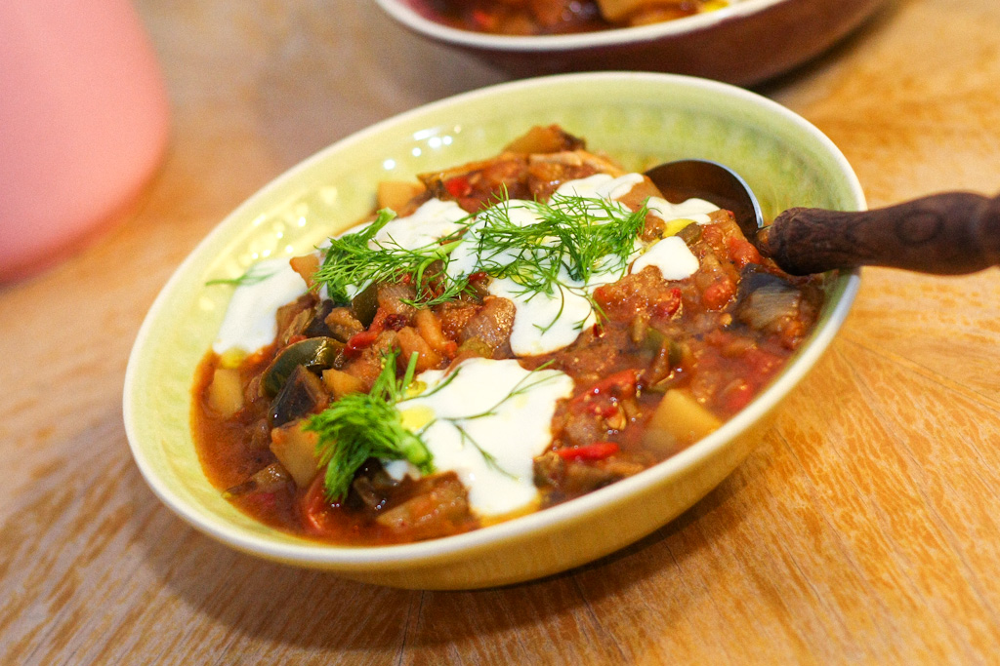

Şakşuka is a Turkish meze dish made with eggplants and zucchinis which are fried in olive oil, then combined with tomato sauce, garlic, and green peppers. When prepared right and served fresh, şakşuka is typically used as a side dish with a variety of grilled meat dishes. Before serving, it is topped with yogurt that has been seasoned with garlic. The dish is usually served chilled, and it is recommended to pair it with freshly baked lavash bread.
Meal prep time : 10 minutes
Servings : 5